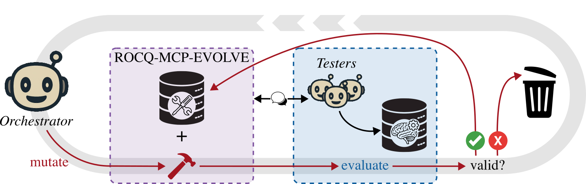

Ports the Rocq-evolved MCP server to Lean (lean-mcp-evolve) and evaluates it against lean-lsp-mcp on a PutnamBench subset.
Abstract
Recent achievements in AI-assisted mathematics require intensive interaction of agents with proof assistants to generate machine-checked proof certificates. Agents interact with proof assistants such as Rocq or Lean through an interface that controls what the agent receives from the prover and the cost of these interactions. Today, these interfaces are adapted from tools designed for humans and not optimized for agents. We propose an evolutionary method where a frontier model incrementally proposes new features and only keeps the ones that improve the overall performance of smaller models. We demonstrate the effectiveness of our method by growing, on a curated set of mathematical problems, \rme, a new MCP server for the Rocq prover. On the held-out test split of miniF2F-Rocq, an agent equipped with \rme outperforms both the baseline that only exposes the Rocq compiler and an established MCP server, across four models from two families, in success rate, cost per solve, and time per solve. Although evolved for Rocq, the resulting server transfers to Lean, improving cost and time per solve on a subset of PutnamBench. We release \rme and its port to Lean.
Problem
LLM agents interact with proof assistants such as Rocq and Lean through interfaces, typically MCP servers, that were adapted from tools built for humans. These interfaces are not optimized for agent accuracy, token cost, or wall time.
Approach
A frontier model acting as orchestrator starts from a compiler-only MCP server and proposes one feature per step. Each feature is kept only if it improves the performance of smaller tester models on curated problem sets. Accuracy is the primary objective, with cost and wall time as secondary objectives. The result is rocq-mcp-evolve, an OCaml server running a live Rocq session, which was then ported to Lean as lean-mcp-evolve.

Figure 2: A step of the evolutionary process. The mutation designed by the orchestrator is denoted by the dark red color. The purple dotted box represents rocq-mcp-evolve , the blue dotted box represents the evaluation of the mutation. The light gray circle shows the process is iterative: a new step starts at the end of the previous one.
Results
On the miniF2F-Rocq test split, rocq-mcp-evolve beats both the compiler-only control and rocq-mcp in accuracy, cost, and wall time across four models. It also does better on project-scale autoformalization tasks. On a PutnamBench subset, the Lean port lowers cost and time per solve, but its solve rate stays below lean-lsp-mcp.
MCP server
Accuracy
Cost ($)
Wall time (s)
control
.33 (.93/.05/.00)
.12
82
lean-lsp-mcp
.42 (.95/.30/.00)
.14
86
lean-mcp-evolve
.33 (.83/.18/.00)
.11
64
Lean transfer on a PutnamBench subset (overall; easy/medium/hard)